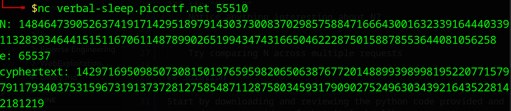
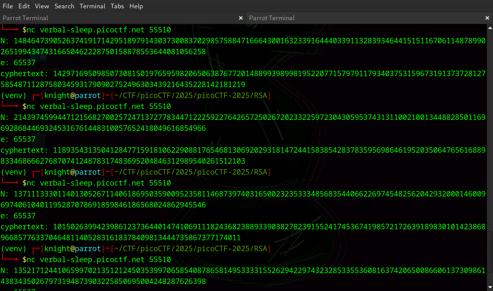

EVEN RSA CAN BE BROKEN???⚓︎
Difficulty:
Source Code: RSA
Objective⚓︎
Description
This service provides you an encrypted flag. Can you decrypt it with just N & e?
Connect
Connect to the program with netcat: nc verbal-sleep.picoctf.net 55510
Hints⚓︎
Hint 1
How much do we trust randomness?
Hint 2
Notice anything interesting about N?
Hint 3
Try comparing N across multiple requests
Solution⚓︎
Start by downloading and reviewing the python code provided and run the netcat command to get an idea of what it looks like.

Running the command gives us the N, e, and cyphertext
We now have N, e, and the cyphertext, presumably in the form of picoCTF{some_flag}. Following the hints, repeat the command a few times to get multiple samples of N.

Use the samples to help
With the clues given about radmoness and N we can hypothesis that the code being used is generating shared primes. If the code reuses the same prime numbers across multiple key generations, it can be possible to find a shared common prime factor accross different N. If two N values share a prime factor, it's possible to determine the prime factor with the greatest common divisor.
After obtaining multiple N values, we need to calculate the GCD. To calculate the GCD of two relatively small numbers you can write a script that looks like this:
| GCD | |
|---|---|
1 2 3 4 5 6 7 8 9 10 11 12 13 | |
Don't reinvent the wheel
Python has libraries that you can use that are highly recommended for calculating large numbers efficiently. Specifically, the gmpy2 library but the python math library is also an option. While it is useful to understand how it works, there is no need to write the code if it already exists.
When the shared prime (p) is determined, it can be used to find the other prime factors (q1 and q2) by dividing N1 and N2 by p. We'll use the found prime factors to calculate the private exponent d:
* `phi = (p - 1) * (q - 1)`
* `d = inverse(e, phi)`
The private exponent d enables us to decrypt via: plaintext = pow(ciphertext, d, N).
Putting all the parts together, I used a script that connected to the netcat service, gathered multiple N values and decrypted the ciphertext.
| solve.py | |
|---|---|
1 2 3 4 5 6 7 8 9 10 11 12 13 14 15 16 17 18 19 20 21 22 23 24 25 26 27 28 29 30 31 32 33 34 35 36 37 38 39 40 41 42 43 44 45 46 47 48 49 50 51 52 53 | |
Dependencies
If using this code, first run pip install pycryptodome & pip install gmpy2
Answer
Compare multiple N value to determne the shared prime and crack the ciphertext